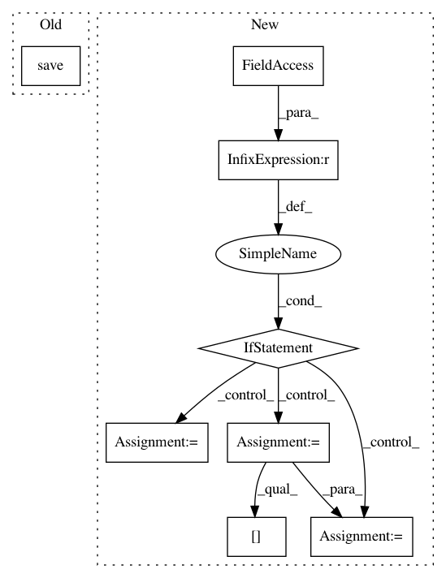

ab4aeb28f1b81747c985a188b6c4c569c02aaa75,allennlp/training/trainer.py,Trainer,_save_checkpoint,#Trainer#Any#Any#Any#,416
Before Change
training_state = {"epoch": epoch,
"val_metric_per_epoch": val_metric_per_epoch,
"optimizer": self._optimizer.state_dict()}
torch.save(training_state, os.path.join(self._serialization_dir,
"training_state_epoch_{}.th".format(epoch)))
if is_best:
logger.info("Best validation performance so far. "
"Copying weights to "%s/best.th".", self._serialization_dir)
shutil.copyfile(model_path, os.path.join(self._serialization_dir, "best.th"))
After Change
if self._num_serialized_models_to_keep:
self._serialized_paths.append([time.time(), model_path, training_path])
if len(self._serialized_paths) > self._num_serialized_models_to_keep:
paths_to_remove = self._serialized_paths.pop(0)
// Check to see if we should keep this checkpoint, if it has been longer
// then self._keep_serialized_model_every_num_seconds since the last
// kept checkpoint.
remove_path = True
if self._keep_serialized_model_every_num_seconds is not None:
save_time = paths_to_remove[0]
time_since_checkpoint_kept = save_time - self._last_permanent_saved_checkpoint_time
if time_since_checkpoint_kept > self._keep_serialized_model_every_num_seconds:
// We want to keep this checkpoint.
remove_path = False
self._last_permanent_saved_checkpoint_time = save_time
if remove_path:
for fname in paths_to_remove[1:]:
os.remove(fname)
def _restore_checkpoint(self) -> Tuple[int, List[float]]:
Restores a model from a serialization_dir to the last saved checkpoint.
This includes an epoch count and optimizer state, which is serialized separately
In pattern: SUPERPATTERN
Frequency: 3
Non-data size: 8
Instances
Project Name: allenai/allennlp
Commit Name: ab4aeb28f1b81747c985a188b6c4c569c02aaa75
Time: 2018-02-02
Author: matt-peters@users.noreply.github.com
File Name: allennlp/training/trainer.py
Class Name: Trainer
Method Name: _save_checkpoint
Project Name: autorope/donkeycar
Commit Name: b85a210e72d4333b71c72f33b905de0ad0070c17
Time: 2017-02-18
Author: wroscoe@gmail.com
File Name: scripts/train.py
Class Name:
Method Name:
Project Name: HyperGAN/HyperGAN
Commit Name: bd090db61ce516a22c8c433bec29a9be7c1c62a2
Time: 2017-06-28
Author: mikkel@255bits.com
File Name: examples/alignment.py
Class Name:
Method Name: